LanLink uses one application protocol, version 1. Chat, file and session messages travel as frames on one TCP connection per client, inside TLS when it is enabled (section 1.4). UDP carries only server discovery (2.8). The same schema check runs when a message is built, encoded and decoded, so neither side can send a message that breaks the field schema.
TCP delivers a byte stream, so one recv() can return part of a frame or several frames [2]. Instead of an end-of-message flag, every frame starts with the length of its header, and the header states the length of its payload. The receiver therefore always knows how many bytes it still needs, and file data needs no escaping. The header uses UTF-8 JSON [7]. LanLink encodes it with sorted keys and no spaces: it is readable in Wireshark on a plaintext loopback server, and the same message always gives the same bytes, so the tests compare frames byte for byte. The payload stays outside the JSON as raw bytes, so file chunks need no base64 (which adds one third) and the login password never appears in the header.
Figure 2 shows one frame. The first 4 bytes are an unsigned 32-bit integer in big-endian (network) byte order. It gives N, the length of the JSON header in bytes, and counts neither itself nor the payload. N must be between 1 and 16 384. The header is N bytes of UTF-8 JSON, and its payload_length field gives P, the number of payload bytes that follow. P may be 0. The next frame starts immediately after the payload. The largest valid frame is a FILE_CHUNK or a USER_LIST reply, both with a 65 536-byte payload ceiling: 4 + 16 384 + 65 536 = 81 924 bytes.
The receiver reads up to 64 KiB per recv() and feeds whatever arrives to a frame decoder. The decoder collects bytes in three stages and keeps any leftover bytes for the next stage:
BAD_FRAME, and more than 16 384 gives HEADER_TOO_LARGE. The check happens before any header byte is buffered.payload_length bytes of payload. They are checked against the type (for example strict UTF-8 for chat), and the complete message is returned.Several frames can complete in one recv(), and one frame can span many. After any protocol error the decoder is "poisoned": every later call raises the same error, because the position of the next frame boundary is no longer known. The stream is never resynchronised. End of stream exactly at a frame boundary is a clean close. End of stream inside a frame gives UNEXPECTED_EOF.
CHAT_PRIVATE frameListing 1 shows the real bytes the encoder produces when a client sends the text Hi Binh! privately to user binh. The request_id is fixed at r1 so that the output can be reproduced; a real client uses a random UUID in hex. The prefix 00 00 00 5b gives N = 91 header bytes (offsets 0x04 to 0x5e). The header has payload_length 8, so the payload is the 8 bytes at offsets 0x5f to 0x66, and the frame is 103 bytes long. The keys appear in sorted order because encoding is canonical.
0000 00 00 00 5b 7b 22 70 61 79 6c 6f 61 64 5f 6c 65 ...[{"payload_le
0010 6e 67 74 68 22 3a 38 2c 22 72 65 63 69 70 69 65 ngth":8,"recipie
0020 6e 74 22 3a 22 62 69 6e 68 22 2c 22 72 65 71 75 nt":"binh","requ
0030 65 73 74 5f 69 64 22 3a 22 72 31 22 2c 22 74 79 est_id":"r1","ty
0040 70 65 22 3a 22 43 48 41 54 5f 50 52 49 56 41 54 pe":"CHAT_PRIVAT
0050 45 22 2c 22 76 65 72 73 69 6f 6e 22 3a 31 7d 48 E","version":1}H
0060 69 20 42 69 6e 68 21 i Binh!
prefix : 00 00 00 5b -> N = 91
header : {"payload_length":8,"recipient":"binh","request_id":"r1",
"type":"CHAT_PRIVATE","version":1}
payload : 48 69 20 42 69 6e 68 21 -> "Hi Binh!" (8 bytes, UTF-8)
Listing 1. A client-to-server CHAT_PRIVATE frame in hex, as produced by the encoder.
Every header carries the four common fields in Table 4. A reply also carries ref_request_id.
Table 4. Common header fields.
| Field | JSON type | Required | Meaning and format |
|---|---|---|---|
version |
integer | every message | Protocol version. It must be 1, otherwise UNSUPPORTED_VERSION. |
type |
string | every message | One of the 21 message types. An unknown value gives UNKNOWN_TYPE. |
request_id |
string | every message | ID of this message: 1 to 64 characters from A-Z a-z 0-9 _ -. The client and server use a random UUID in hex. |
payload_length |
integer | every message | Number of payload bytes after the header, from 0 to the ceiling of the type (Table 11, Section 2.6.1). |
ref_request_id |
string | replies (per type, Tables 5 to 9) | The request_id of the message being answered. Same format as request_id. |
A transfer_id is 32 lowercase hex characters and a sha256 is 64. Validation is strict. The field set must be exact: a missing field gives MISSING_FIELD and an extra one INVALID_FIELD. Integers must be JSON integers (not booleans), strings must be non-empty without control characters, and duplicate keys, NaN or Infinity give BAD_JSON. String lengths are in Table 11 (Section 2.6.1), and the codec enforces the field rules described above.
The receiver also checks direction. HELLO and AUTH come only from a client; HELLO_ACK, AUTH_OK, ERROR and CHAT_ACK only from the server; DISCOVER and SERVER_INFO only over UDP. A type in the wrong direction gives INVALID_FIELD.
There are 21 message types, 19 on TCP and 2 on UDP, listed by group in Tables 5 to 9. "opt." marks an optional field; every other listed field is required. A type without a listed payload must have an empty payload. Section 3 shows the order of messages in a conversation.
Table 5. Session messages.
| Type | Direction | Header fields (besides common) | Payload | Reply |
|---|---|---|---|---|
HELLO |
C→S | client_name (≤64), client_version (≤32) |
none | HELLO_ACK |
HELLO_ACK |
S→C | ref_request_id, server_name (≤64), limits (object with exactly the 8 limit keys listed in Section 2.6.1) |
none | none |
AUTH |
C→S | username (≤32, no whitespace) |
password, UTF-8, 1–256 B | AUTH_OK, or ERROR |
AUTH_OK |
S→C | ref_request_id, username |
none | none |
USER_LIST request |
C→S | none | must be empty | USER_LIST reply, or ERROR |
USER_LIST reply |
S→C | ref_request_id |
JSON {"users":[{"username","online","ip","port"}]}, 1–65 536 B |
none |
LOGOUT |
C→S | opt. reason (≤128) |
none | After login: none; the server closes the connection. Before login: ERROR NOT_AUTHENTICATED, and the connection stays open |
PING |
either (unused) | none | none | PONG (never sent) |
PONG |
either (unused) | ref_request_id |
none | none |
The client checks that the limits object in HELLO_ACK is valid (an invalid one fails the handshake) but never applies the values (see 1.5). In the USER_LIST reply, ip and port may be null. PING and PONG have no handler: a client that sends PING gets an ERROR and is disconnected (Table 10; see 1.5).
Table 6. Chat messages.
| Type | Direction | Header fields (besides common) | Payload | Reply |
|---|---|---|---|---|
CHAT_PUBLIC |
C→S | none | UTF-8 text, 1–8 192 B | CHAT_ACK |
CHAT_PUBLIC forwarded |
S→C | sender, message_id, timestamp_ms |
same text | none |
CHAT_PRIVATE |
C→S | recipient (≤32) |
UTF-8 text, 1–8 192 B | CHAT_ACK, or ERROR |
CHAT_PRIVATE forwarded |
S→C | recipient, sender, message_id, timestamp_ms |
same text | none |
CHAT_ACK |
S→C | ref_request_id, message_id, timestamp_ms, status (must be "accepted") |
none | none |
The forwarded copy has a new request_id and the server-stamped sender, message_id and timestamp_ms (Unix milliseconds; 2.6.3). The same message_id and timestamp_ms return in CHAT_ACK, which means "accepted by the server", not "delivered": a public message is acknowledged even if there were no recipients or some deliveries failed.
Table 7. File-transfer messages. "Sender" and "recipient" are the two clients of a transfer. Every message passes through the server.
| Type | Sent by | Header fields (besides common) | Payload | Server action |
|---|---|---|---|---|
FILE_OFFER |
sender | transfer_id, recipient, filename, size, sha256, chunk_size; the forwarded copy adds sender |
none | Creates an OFFERED session and forwards the offer to the recipient, or replies ERROR |
FILE_ACCEPT |
recipient | transfer_id |
none | Sets ACCEPTED, forwards to the sender, then echoes back to the recipient |
FILE_REJECT |
recipient | transfer_id; opt. reason (≤128, free text) |
none | Sets REJECTED, forwards to the sender, then echoes back to the recipient |
FILE_CHUNK |
sender | transfer_id, seq |
file bytes, 1–65 536 B | Relays it, sets TRANSFERRING |
FILE_END |
sender | transfer_id, total_chunks, total_bytes |
none | Relays it, sets VERIFYING |
FILE_RESULT |
recipient | transfer_id, ok, received_bytes; opt. sha256, opt. error_code |
none | Relays it, sets COMPLETED or FAILED |
FILE_CANCEL |
either | transfer_id; opt. reason (must be an error code) |
none | Relays it, sets CANCELLED |
The decoder rejects a filename that is not 1–255 characters and at most 255 UTF-8 bytes, is . or .., or contains / or \, with UNSAFE_FILENAME, and any size above 100 MiB with FILE_TOO_LARGE. chunk_size must be 1–65 536, and FILE_RESULT carries error_code exactly when ok is false.
The server does not check seq, sizes or hashes; the receiving client does. seq must be the next chunk number (SEQ_MISMATCH). Every chunk but the last must be chunk_size bytes, and the totals in FILE_END must match (SIZE_MISMATCH). The SHA-256 of the received bytes must match the offer (HASH_MISMATCH). The receiver always puts that hash in FILE_RESULT, and the sender accepts ok: true only if received_bytes and the hash match its own file.
Table 8. Discovery messages (UDP only; the datagram format is in 2.8).
| Type | Direction | Header fields (besides common) | Payload | Reply |
|---|---|---|---|---|
DISCOVER |
client → broadcast | none | none | SERVER_INFO |
SERVER_INFO |
server → client (unicast) | ref_request_id, server_name (≤64), port (1–65535), tls (bool); opt. host (≤255) |
none | none |
The server never sets host; the client takes the server's IP from the datagram's source address. Either type sent over TCP gives INVALID_FIELD.
Table 9. The error message.
| Type | Direction | Header fields (besides common) | Payload | Reply |
|---|---|---|---|---|
ERROR |
S→C only | code (an error code, Table 10), message (≤256); opt. ref_request_id, opt. field (≤64), opt. transfer_id |
none | none |
message is user-facing text (Vietnamese, except one English text in the HELLO phase). ref_request_id is present when the error answers a request. It is absent from the HELLO-phase error and from transfer notices (TIMEOUT, CONNECTION_LOST), including the one the recipient gets when its FILE_REJECT cannot be forwarded. The server never sets field.
There are 35 error codes. A code reaches the peer in an ERROR, as the error_code of a FILE_RESULT, or as the reason of a FILE_CANCEL. Decoder errors close the connection without a reply (2.6.2), and some codes are local only.
Table 10 lists all 35 error codes, where each can appear (ERROR.code, FILE_RESULT.error_code, FILE_CANCEL.reason, a closed connection, or a local outcome only) and when it is produced.
Table 10. Error codes and where each appears on the wire.
| Code | Where it appears | When |
|---|---|---|
BAD_FRAME |
connection closed; datagram ignored (UDP) | Header length 0; a UDP datagram with bytes after its frame |
HEADER_TOO_LARGE |
connection closed | Header length above 16 384 B |
PAYLOAD_TOO_LARGE |
connection closed; datagram ignored (UDP) | payload_length above the ceiling for the type; datagram above 1 024 B |
PAYLOAD_LENGTH_MISMATCH |
local only | A locally constructed message whose payload size differs from payload_length (only at build or encode time, because the decoder always reads exactly payload_length bytes) |
UNEXPECTED_EOF |
connection closed; datagram ignored (UDP) | Stream ends inside a frame; datagram shorter than its prefix says |
BAD_JSON |
connection closed; local | Invalid UTF-8 or JSON, header not an object, duplicate key, NaN/Infinity, or nesting too deep for the JSON parser. Local: a header nested deeper than 32 at build or encode time (a received header nested that deep fails the field checks first, with INVALID_FIELD) |
UNSUPPORTED_VERSION |
connection closed | version is not 1 |
UNKNOWN_TYPE |
connection closed | type is not one of the supported message types |
MISSING_FIELD |
connection closed | A required field is absent |
INVALID_FIELD |
connection closed; ERROR |
Decoder: bad value, unknown field or wrong direction (closed). ERROR: first message is not HELLO; HELLO, PING or PONG after login (then closed; before login these get NOT_AUTHENTICATED, then closed); FILE_OFFER to oneself |
SPOOFED_FIELD |
connection closed | A client header contains sender, message_id or timestamp_ms |
BAD_PAYLOAD |
connection closed | Empty AUTH, chat or FILE_CHUNK payload; text that is not UTF-8; malformed USER_LIST JSON |
NOT_AUTHENTICATED |
ERROR |
Any message other than AUTH before login |
AUTH_FAILED |
ERROR |
Wrong username or password, or the server was started without --users. The third failure also closes the connection |
ALREADY_LOGGED_IN |
ERROR |
AUTH on a connection that is already logged in, or for a username that has a session |
RECIPIENT_OFFLINE |
ERROR |
CHAT_PRIVATE or FILE_OFFER to a username with no active session, whether or not the account exists |
RECIPIENT_UNKNOWN |
never raised | Defined, but no code path uses it |
QUEUE_FULL |
ERROR; local |
ERROR: the connection has already used 64 transfer IDs. Local: the client already has 64 requests waiting for replies; or the client's file-event queue is full, which closes the client's connection. That queue defaults to 128 entries, but the CLI passes its own unbounded queue, so this case cannot occur in the CLI |
TIMEOUT |
ERROR |
A transfer phase exceeded --transfer-timeout; sent with transfer_id to both parties |
CONNECTION_LOST |
ERROR; local |
ERROR reply to CHAT_PRIVATE when the write to the recipient failed, and to CHAT_PRIVATE/FILE_OFFER when the recipient's AUTH_OK was not sent within 1 s. ERROR notice with transfer_id and no ref_request_id, sent to both parties, when the other party of a transfer disconnected or a transfer message (including the FILE_OFFER itself) could not be forwarded. The exception is a FILE_RESULT or FILE_CANCEL that ends the transfer: if it cannot be forwarded, it is dropped without a notice. If a FILE_REJECT could not be forwarded, the notice goes to the recipient only. Local: the client lost the server |
FILE_TOO_LARGE |
connection closed; local | Decoder: a size field above 100 MiB. Local: source-file inspection refuses to offer the file |
FILE_NOT_FOUND |
local | Source-file inspection finds that the path is missing or is not a regular file |
SOURCE_CHANGED |
FILE_CANCEL.reason; local |
Local: the file changed while it was being hashed before the offer. FILE_CANCEL.reason: it changed while the chunks were being sent |
UNSAFE_FILENAME |
connection closed; local | Decoder: bad filename. Local: filename validation |
TRANSFER_UNKNOWN |
ERROR |
transfer_id not registered, already finished, or expired on accept or reject |
TRANSFER_STATE |
ERROR; FILE_RESULT.error_code |
ERROR: duplicate transfer_id, wrong party, or a message not allowed in the current status. Result: the receiver got an unexpected message |
SEQ_MISMATCH |
FILE_RESULT.error_code |
Chunk seq is not the next expected number |
SIZE_MISMATCH |
FILE_RESULT.error_code; local |
A chunk or total size is wrong. The sender also fails locally if received_bytes differs from the file size |
HASH_MISMATCH |
FILE_RESULT.error_code; local |
The SHA-256 of the received bytes differs from the offer, or the result hash differs from the sender's |
DISK_FULL |
FILE_RESULT.error_code |
No space while writing. At accept time, the client sends FILE_REJECT (no reason) instead |
PERMISSION_DENIED |
FILE_RESULT.error_code |
No permission while writing or renaming. At accept time, the client sends FILE_REJECT instead |
REJECTED_BY_PEER |
local | The sender's outcome after FILE_REJECT |
CANCELLED_BY_PEER |
local | The outcome after receiving FILE_CANCEL |
CANCELLED_LOCAL |
local; FILE_CANCEL.reason |
Local cancellation through the transfer-engine API. The CLI has no cancel command |
INTERNAL |
FILE_RESULT.error_code; local |
Any other OS error; fallback text for an unknown code |
RECIPIENT_UNKNOWN is never raised: the server looks only for an active session, so a message to an unknown username gets RECIPIENT_OFFLINE. FILE_CANCEL.reason carries whichever error stopped the sender while it was reading the file; in practice SOURCE_CHANGED or a translated OS error.
The largest frame is 81 924 B (4 + 16 384 + 65 536). A file chunk carries at most 64 KiB (65 536 B), a chat message at most 8 KiB (8 192 B), and a file may be at most 100 MiB. An idle connection is closed after 45 s with the server's built-in default, or 120 s when the server is started from the command line. A new connection has 5 s for the TLS handshake and then a fresh 5 s to send HELLO.
Table 11 collects every size limit and timeout. The size values are the protocol defaults. A decoded limits object must contain exactly the eight keys below. Each value must stay within a ceiling (for example 1 MiB for the header and chunk limits, 65 507 B for datagrams), and the idle timeout must be greater than the heartbeat interval.
max_header_bytes max_chunk_bytes max_file_bytes max_chat_bytes
max_user_list_bytes max_datagram_bytes heartbeat_interval_s idle_timeout_s
Table 11. Size limits and timeouts.
| Item | Value | Effect |
|---|---|---|
| Header length N | 1–16 384 B | BAD_FRAME / HEADER_TOO_LARGE |
AUTH payload |
1–256 B | PAYLOAD_TOO_LARGE / BAD_PAYLOAD |
| Chat payload | 1–8 192 B | same |
FILE_CHUNK payload, chunk_size |
1–65 536 B | same; INVALID_FIELD for chunk_size |
USER_LIST payload |
request 0 B; reply 1–65 536 B | same |
| Payload of every other type | 0 B | PAYLOAD_TOO_LARGE |
| File size | 0–104 857 600 B (100 MiB) | FILE_TOO_LARGE |
| UDP datagram (whole frame) | ≤ 1 024 B | PAYLOAD_TOO_LARGE; datagram ignored |
| String fields (characters) | username, sender, recipient 32 (no whitespace); client_name 64; client_version 32; server_name 64; host 255; message 256; field 64; status 16; reason 128; filename 255 (and ≤255 UTF-8 bytes); ip 45 |
INVALID_FIELD / UNSAFE_FILENAME / BAD_PAYLOAD |
| Integers | 0 to 2^63-1; port 1–65535 |
INVALID_FIELD |
| Transfer IDs per connection | 64 | QUEUE_FULL |
| Failed logins per connection | 3 | connection closed |
Concurrent connections (--max-clients) |
64 | extra connections closed at once |
Handshake (server --timeout) |
5.0 s for the TLS handshake, then a fresh 5.0 s for HELLO |
connection closed, no ERROR |
Idle connection (--idle-timeout) |
45.0 s (server class default); 120.0 s (--idle-timeout) |
connection closed; extended while the connection has a live transfer |
Transfer phase (--transfer-timeout) |
60.0 s | ERROR TIMEOUT to both parties; reset by every accepted or relayed transfer message |
| Worker wake-up | 0.5 s | longest single wait in recv(); worker re-checks transfer deadlines and CLOSING |
Wait for recipient's AUTH_OK |
1.0 s | ERROR CONNECTION_LOST |
| Heartbeat interval | 15 s | advertised only; nothing uses it |
Client request (client --timeout) |
5.0 s | waits for the matching reply; on expiry the client closes the session |
| Discovery wait | 2.0 s | collects SERVER_INFO replies until then |
| Transfer engine timeouts | sender 60 s (OFFERED) / 30 s (later); receiver 30 s |
available in the transfer engine but not activated by the CLI |
The advertised idle timeout differs from the real one: HELLO_ACK always advertises 45 s (the built-in server default), while the command-line server uses 120 s. The client checks that limits is valid (an invalid object fails the handshake) but never applies the values, so the wrong number has no effect at run time.
Malformed frame: the connection is closed. Any decoder error (framing, JSON, schema, direction or a spoofed field) poisons the stream (2.2.2), so the server closes the socket without a reply. The only exception is a well-formed frame other than HELLO during the HELLO phase: it gets ERROR INVALID_FIELD without ref_request_id, and then the connection closes. A handshake timeout closes silently.
Valid frame, bad request: an ERROR reply. A well-formed message that fails a routing, state or login check gets one ERROR with the code, ref_request_id and, if present, transfer_id. The connection stays open, except after the third AUTH_FAILED and after an unhandled type (HELLO after the handshake, PING, PONG). Table 10 gives the codes. Invalid UDP datagrams are ignored silently.
sender, message_id and timestamp_ms are set only by the server. If a client header contains any of them, the frame fails with SPOOFED_FIELD and the connection closes. The server stamps sender (the username logged in on the sending connection) on every forwarded chat message and FILE_OFFER, and a fresh message_id and timestamp_ms on chat messages. A client therefore cannot claim to be another user.
The server keeps one record per accepted socket; Figure 3 shows its states.
CONNECTING: created after accept() if fewer than the maximum number of clients (64 by default) are connected; TLS handshake, then HELLO, 5 s each.HELLO_ACCEPTED: HELLO_ACK sent; the server waits for AUTH.AUTHENTICATED: user registered, then AUTH_OK sent; other users' messages are forwarded only after that AUTH_OK (waiting up to 1 s).CLOSING: server shutdown, or a failed write to this peer (a partial frame may be on the wire); nothing more is sent, and the worker notices within 0.5 s.CLOSED: every exit path; the user is removed and its transfers fail with CONNECTION_LOST.End of stream, an idle timeout, a malformed frame, the third failed login, an unhandled type and LOGOUT after login go straight to CLOSED. Before login, LOGOUT gets ERROR NOT_AUTHENTICATED and the state does not change.

A transfer has eight statuses, four of them final (COMPLETED, REJECTED, FAILED, CANCELLED). The sender, the server and the recipient each track it. Figure 4 shows the allowed transitions; every non-final state may also move to CANCELLED or FAILED.
OFFERED: the offer is made (sender, server); the recipient's record starts here when its user accepts.ACCEPTED: the recipient has opened its .part file and sends FILE_ACCEPT.TRANSFERRING: chunks are flowing (from the first FILE_CHUNK).VERIFYING: the last chunk is sent and FILE_END follows.COMPLETED: counts and SHA-256 match and the .part file is renamed; FILE_RESULT with ok: true.REJECTED / CANCELLED: after FILE_REJECT / FILE_CANCEL.FAILED: ERROR TIMEOUT or CONNECTION_LOST, FILE_RESULT with ok: false, or a local error.The server also checks roles. Only the recipient may send FILE_ACCEPT or FILE_REJECT (in OFFERED) and FILE_RESULT (after OFFERED; ok: true only in VERIFYING). Only the sender may send FILE_CHUNK or FILE_END (in ACCEPTED or TRANSFERRING). Either party may send FILE_CANCEL before a final state. Anything else gets ERROR TRANSFER_STATE, and a finished session is removed at once.
Unlike the two clients, the server does not check transitions on its relay path. Its record therefore also moves TRANSFERRING → TRANSFERRING on each further chunk, and ACCEPTED → VERIFYING for an empty file (marked in Figure 4).

A client finds a server on the LAN by UDP broadcast. Each datagram holds exactly one frame in the format of Figure 2, with no payload and no trailing bytes, and is at most 1 024 B long; an invalid datagram is ignored.
The server binds its UDP socket to the same address and port as its TCP listener (default port 5000; with the default host 127.0.0.1 this is loopback). If the bind fails, the server runs without discovery. The client broadcasts one DISCOVER to 255.255.255.255 on that port and collects replies for 2 s. The server answers with a unicast SERVER_INFO to the source address and port of the request, carrying ref_request_id, server_name, the TCP port and the tls flag.
The client keeps the replies that match its request_id, takes each server's IP from the source address, prints the list and exits. The user then connects with that host and port; TLS is chosen from the client's own options, not from tls. Discovery is plaintext and finds servers, not users (see 1.5); a client learns who is online through USER_LIST (Table 5).